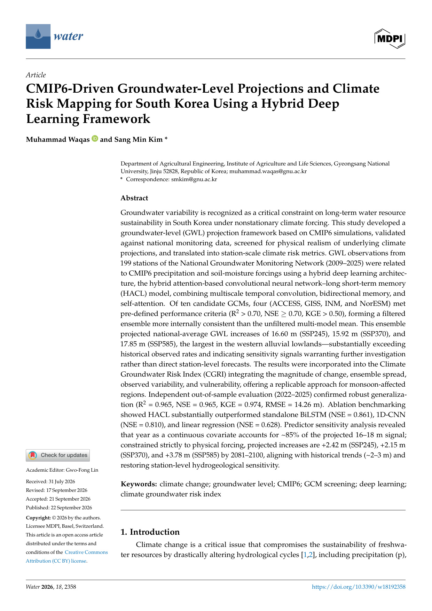

Climate Forecasting AI
Machine learning and deep learning workflows for precipitation forecasting, drought projection, CMIP6 downscaling, and ENSO teleconnections.
AI Climate Intelligence • Hydrology • Agriculture
Environmental AI researcher advancing predictive modeling across climate risk, groundwater dynamics, river-basin hydrology, and smart agricultural systems.
An attention-based hybrid CNN-BiLSTM (HACL) framework integrating 199 telemetric groundwater monitoring stations with multi-GCM CMIP6 climate scenarios and the Climate Groundwater Risk Index (CGRI) across South Korea.

AI Climate Intelligence
I combine environmental domain knowledge with reproducible modeling to connect complex climate, water, and agricultural datasets with clear scientific outputs and real-world policy insights.
Research Focus
Multi-disciplinary innovation connecting artificial intelligence with physical Earth systems.
Machine learning and deep learning workflows for precipitation forecasting, drought projection, CMIP6 downscaling, and ENSO teleconnections.
River-basin modeling, groundwater head prediction, CGRI risk mapping, streamflow forecasting, and automated evapotranspiration estimation.
Hybrid architectures including WaveNet-LSTM, Geospatial Graph Neural Networks (GNN), Attention mechanisms, and Physics-Informed Neural Networks (PINNs).
Crop water demand modeling, smart greenhouse circulation, circular biorefinery, biochar soil amendment, and heavy metal environmental remediation.